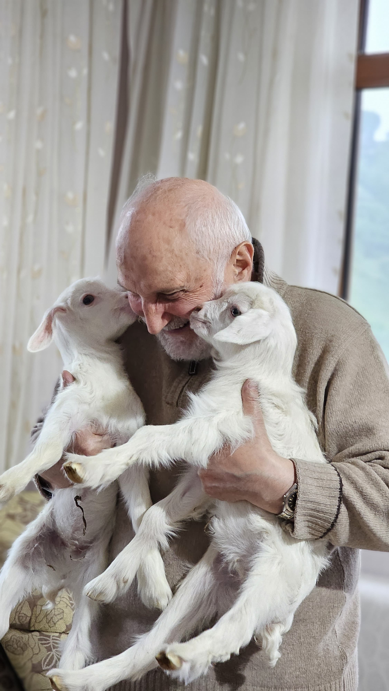

Ömrün Neşesi Avuçlarda

Bazen en saf mutluluk, avuçlarınızın arasına sığan bir canda gizlidir. Tıpkı baharın ilk müjdecileri gibi bembeyaz, hayat dolu bu iki küçük can... Yumuşacık tüyleri, size umutla bakan gözleri ve insanın içini ısıtan o telaşlı, sevimli halleriyle...
Onları kucaklarken, yılların birikimini taşıyan ellerde yeniden hayat buluyor sanki yaşamın o en taze, en lekesiz nefesi. Zamanın çizgilerini taşıyan bir yüzde beliren o müşfik tebessümle, yeni başlayan bir hayatın körpe merakı nasıl da kucaklaşıyor... Ne para, ne pul; işte hayatın özü bu anlarda saklıdır belki de: Biri diğerine güvenle sokulurken, diğeri onu şefkatle sararken kurulan o sessiz, sözsüz, sımsıcak köprüde...
Doğanın Öğrettiği Direnç
Zorlu coğrafyalarda geçen hayatları anlatan bir gezi günlüğü okuyordum geçenlerde. Yazarın, sarp yamaçlara tutunan ağaçlardan ve hırçın dalgalara göğüs geren kıyılardan bahsederken kullandığı ifadeler dikkatimi çekti. Doğanın bu boyun eğmez tavrının, orada yaşayan insanların karakterine nasıl işlediğini anlatıyordu.
"Toprak ne kadar sert, hava ne kadar çetin olursa olsun, hayat kendine bir yol buluyor; tıpkı kayaların arasından fışkıran o inatçı filizler gibi..."
Bu satırlar bana ister istemez içinde yaşadığımız bu güzel Karadeniz coğrafyasını hatırlattı. Dik yamaçlar, sürekli yağan yağmur, gelgitli deniz... Bütün bu doğal koşullar, buranın insanına da benzersiz bir direnç, pratik bir zeka ve mücadeleci bir ruh katmış sanki. Okuduğum bu kitap, doğa ile insan arasındaki o kopmaz bağ ve adaptasyon gücü üzerine tekrar düşünmemi sağladı. Zorlukların içinde bile bir güzellik ve yaşama gücü bulabilmek, sanırım doğanın bize fısıldadığı en önemli derslerden biri.
Kaynak: Bir Gezginin Not Defteri (Örnek), A. Gezgin
Tarihin Fısıldadığı Küçük Şeyler
Tarih kitapları genellikle büyük olaylara, savaşlara, krallara odaklanır. Ancak bazen okuduğum detaylı bir tarih araştırmasında karşıma çıkan küçücük bir ayrıntı, koca bir dönemi anlamak için generallerin stratejilerinden daha fazla şey anlatır bana. Geçenlerde okuduğum bir kitapta tam da böyle bir an yaşadım.
"O dönemde başkentteki bir evin muhasebe defterinde, 'misafire ikram edilen bir fincan kahvenin' maliyetinin dahi özenle not edildiğini gördük. Bu küçük kayıt, dönemin ekonomik zorluklarını ve insan ilişkilerindeki nezaketi aynı anda yansıtıyordu."
Sadece bir fincan kahve... Ama o küçücük detay, bize büyük anlatıların çoğu zaman gözden kaçırdığı gündelik hayatın ritmini, insanların değer yargılarını ve dönemin atmosferini fısıldıyor adeta. Tarihi sadece büyük olaylar üzerinden değil, bu tür insani 'küçük şeyler' üzerinden okumayı denediğimizde, geçmişle daha derin bir bağ kurabildiğimizi düşünüyorum. Bu yüzden okurken satır aralarında kalmış bu tür anekdotları yakalamayı seviyorum.
Kaynak: Unutulmuş Yüzyılın İzleri (Örnek), Dr. Tarihçi